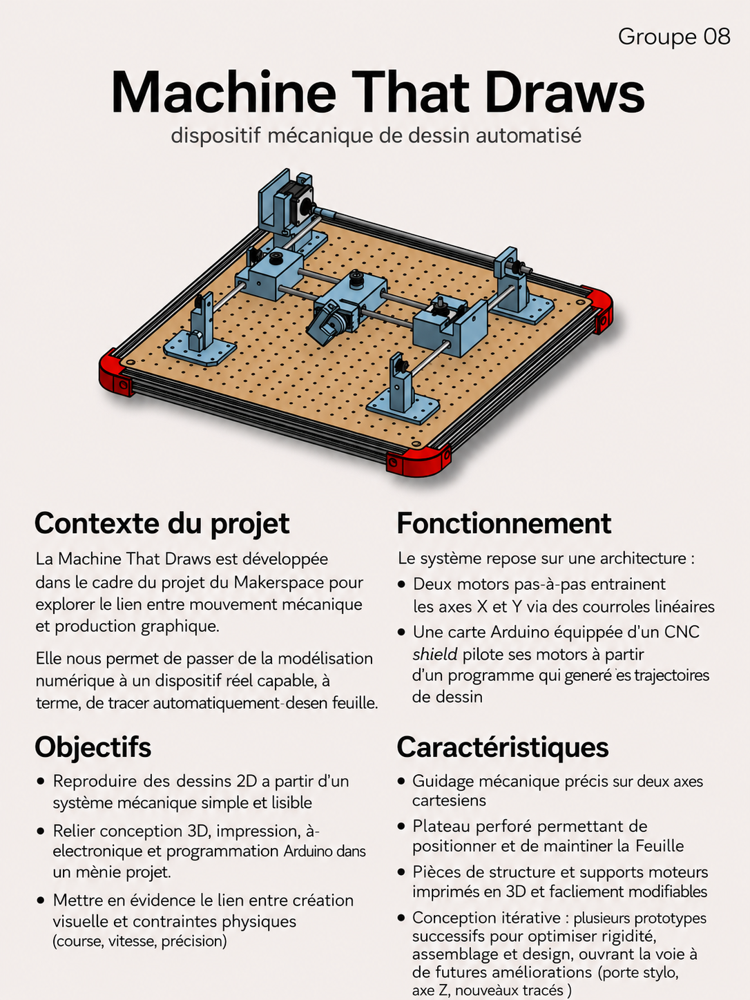

Machine
That Draws
Documentation de projet · UniLaSalle Amiens · Groupe 08 · 2025–2026
Bienvenue dans la documentation du projet Machine That Draws. Ce site présente toutes les informations nécessaires pour comprendre, utiliser et reproduire notre machine cartésienne capable de dessiner automatiquement sur une feuille à l'aide de moteurs pas-à-pas.
À propos du Projet
Machine That Draws est un projet de conception et de prototypage réalisé dans le cadre du Makerspace d'UniLaSalle Amiens. Notre objectif est de développer une machine cartésienne capable de dessiner automatiquement sur une feuille à l'aide de moteurs pas-à-pas, d'une carte de commande et d'un système de pilotage programmable.
Ce projet relie plusieurs domaines complémentaires : modélisation 3D, électronique, programmation et fabrication. La machine repose sur un déplacement selon deux axes X et Y, afin de tracer des formes, motifs ou dessins de manière précise et automatisée.
Cette documentation présente notre démarche, nos choix de conception, les composants utilisés et les différentes étapes de réalisation. Elle permet à n'importe quelle personne intéressée de comprendre le fonctionnement de la machine et, si souhaité, de la reproduire.
Poster

Vidéo de présentation
Objectifs
du projet
Contexte, cahier des charges et objectifs pédagogiques
Introduction
Pour ce projet, nous avons décidé de réaliser une machine cartésienne qui dessine, fonctionnant sur deux axes X et Y. L'objectif du premier semestre était de finaliser au minimum un axe fonctionnel.
Contexte du Projet
Ce projet a été réalisé dans le cadre scolaire du Makerspace UniLaSalle Amiens, avec des contraintes de matériel et de temps. Nous disposions néanmoins d'une liberté créative notable dans nos choix de conception et d'implémentation.
Objectifs du Projet
Existant
Nous nous sommes appuyés sur des projets déjà réalisés dans la base de données du Makerspace, ainsi que sur les machines construites par les anciens étudiants. Nous avons mixé nos idées avec celles inspirées des ressources disponibles et du matériel fourni pour concevoir une machine unique.
Cahier des Charges
Contraintes fonctionnelles
- La machine doit dessiner de manière fluide tout dessin vectorisable
- Déplacement précis sur les axes X et Y
- Pilotage via G-code généré depuis une image numérique
Contraintes techniques
| Domaine | Contrainte |
|---|---|
| Matériaux | Utiliser la planche fournie obligatoirement |
| Électronique | Maîtriser la carte Arduino et ses composants |
| Logiciel | Arduino IDE · GitHub · Processing |
| Dimensions | Ne pas dépasser significativement la planche bois |
| Précision | Traits précis et soignés |
Contraintes d'usage
Contraintes temporelles
Études &
Choix techniques
Analyse comparative des architectures de machines à dessiner
Pour mettre en place une machine efficace et adaptée à nos contraintes, nous avons analysé et comparé plusieurs types d'architectures existantes. Chaque solution a été évaluée sur ses avantages, ses inconvénients et sa faisabilité dans notre contexte.
Machine Cartésienne
✓ RetenuFonctionne en utilisant un système de coordonnées X, Y (et parfois Z). Une tête de dessin se déplace sur des axes perpendiculaires pour atteindre n'importe quel point dans une zone de travail rectangulaire.
- Idéale pour les dessins techniques et détaillés
- Solide et stable mécaniquement
- Documentation et ressources abondantes
- Peut prendre plus de temps et d'espace
Système CoreXY
Non retenuVariation sophistiquée des machines cartésiennes, utilisant deux moteurs pour déplacer simultanément la tête sur les axes X et Y.
- Mouvement plus rapide et fluide
- Réduction des vibrations
- Meilleure qualité de dessin
- Calibration plus complexe
- Firmware plus difficile à maîtriser
Traceur Mobile
Non retenuMachine capable de se déplacer librement sur une surface pour dessiner, comme un robot sur roues.
- Originalité et démarquage
- Grands formats possibles
- Trop complexe pour le temps imparti
- Peu adapté aux petits dessins
- Prend trop de place
Machine à Bras Articulé
Non retenuUtilise un ou plusieurs bras mécaniques pour déplacer un outil de dessin, inspiré des robots manipulateurs industriels.
- Courbes et motifs complexes
- Originalité et flexibilité
- Exploration de la cinématique
- Trop complexe pour le temps imparti
Composants retenus
| Composant | Rôle | Technologie |
|---|---|---|
| Moteurs | Déplacement axes X et Y | Pas-à-pas NEMA 17 |
| Carte de commande | Pilotage de la machine | Arduino |
| Structure | Châssis et guidage | Bois + Impression 3D PLA |
| Transmission | Mouvement linéaire | Courroie GT2 |
| Logiciel | G-code et pilotage | Arduino IDE / Processing |
Conception &
Prototypage
Modélisation 3D sur Onshape et développement du prototype
Pour réaliser ce projet, nous avons utilisé Onshape, un logiciel de CAO en ligne qui nous a permis de modéliser toutes les pièces de la machine, de les assembler virtuellement et de préparer leur fabrication par impression 3D.
Chaque pièce a été modélisée en s'adaptant à nos contraintes : temps limité, dimensions imposées par la planche fournie, et nécessité d'un déplacement fluide sur le support.
Démarche de Conception
Analyse du cahier des charges
Étude des contraintes fonctionnelles, dimensionnelles et budgétaires avant tout début de modélisation.
Benchmark et inspiration
Étude de machines existantes sur YouTube et dans la base Makerspace. Choix de l'architecture cartésienne.
Modélisation Onshape
Conception pièce par pièce, assemblage virtuel, vérification des interférences et itérations successives.
Fabrication & tests
Impression 3D des pièces, assemblage mécanique, câblage électronique et premiers tests de dessin.
Technologies
Onshape (CAO) Arduino IDE Processing Impression 3D PLA GitHub G-CodeÉtapes de
Fabrication
Vue d'ensemble du processus de fabrication
La fabrication s'est déroulée en plusieurs étapes successives et interdépendantes, de la préparation des matériaux bruts jusqu'à l'assemblage final, l'intégration électronique et les tests de validation.
Processus global
Préparation des matériaux
Découpe de la planche en bois selon les gabarits Onshape. Impression 3D de toutes les pièces structurelles en PLA.
Assemblage mécanique
Montage des rails, moteurs pas-à-pas, courroies GT2 et porte-stylo. Vérification des alignements.
Intégration électronique
Câblage de la carte Arduino, des drivers moteurs et des fins de course. Tests électriques par axe.
Tests et calibration
Premiers tracés de test, calibration des pas moteur, ajustements pour améliorer la précision.
Étape 1
Préparation
Préparation des matériaux — Découpe & impression 3D
Cette section décrit la première étape du processus de fabrication : la préparation de l'ensemble des matériaux nécessaires — découpe du châssis en bois et impression 3D des pièces structurelles modélisées sur Onshape.
Liste des Matériaux
| Matériau | Usage | Quantité |
|---|---|---|
| Planche contreplaqué (fournie) | Châssis principal | 1 pièce |
| Filament PLA | Pièces mécaniques imprimées | Selon besoin |
| Visserie M3 / M5 | Assemblage général | ~50 pièces |
| Courroie GT2 | Transmission du mouvement | ~1 m / axe |
| Rails de guidage | Guidage linéaire | 2 axes |
Procédure de Préparation
Nettoyage
Nettoyer tous les matériaux pour enlever la poussière et les débris. Vérifier l'état des surfaces.
Découpe
Découper la planche bois selon les gabarits définis dans Onshape, aux cotes exactes. Utiliser scie et perceuse en atelier.
Impression 3D
Exporter les pièces Onshape en STL, imprimer sur les imprimantes du Makerspace avec 20–30% de remplissage minimum.
Pièces imprimées
- Support moteur axe X (×2)
- Support moteur axe Y (×2)
- Chariot axe X avec porte-stylo
- Tendeurs de courroie
- Pieds de support (×4)
Conseils de Sécurité
Étape 2
Assemblage
Montage mécanique et intégration électronique
Après la préparation des matériaux, l'étape suivante est l'assemblage complet de la machine : structure mécanique, motorisation et câblage électronique.
Étapes d'assemblage
Organisation
Organiser et identifier tous les composants préparés avant de commencer le montage.
Montage du châssis
Fixer les pieds et les rails de guidage sur la planche bois. Vérifier l'équerrage avant serrage définitif.
Installation des moteurs
Visser les moteurs NEMA 17 dans leurs supports. Installer les poulies et mettre en place les courroies GT2.
Montage chariot & porte-stylo
Glisser le chariot sur les rails. Régler la tension des courroies. Fixer le porte-stylo avec servo-moteur.
Câblage électronique
Connecter les moteurs aux drivers A4988. Câbler la carte Arduino. Tester chaque axe indépendamment.
Vérifications à effectuer
- Toutes les pièces sont correctement alignées
- Stabilité et solidité de l'assemblage vérifiées
- Test de déplacement axe X — course complète sans accroc
- Test de déplacement axe Y — course complète sans accroc
- Test de levée / abaissement du stylo
- Premier tracé de calibration (carré 50×50 mm)
Problèmes courants
| Problème | Solution |
|---|---|
| Pièces qui ne s'emboîtent pas | Vérifier alignement et dimensions, ajuster le jeu d'impression |
| Courroie qui glisse | Régler le tendeur, vérifier les dents de la poulie |
| Axe qui saute des pas | Réduire la vitesse, vérifier l'alimentation du driver |
| Imprécision dans les tracés | Calibrer les steps/mm dans le firmware |